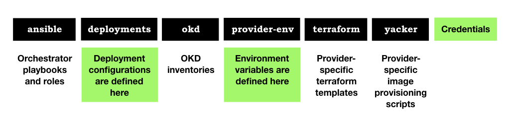

Architecture¶
The orchestrator is a utility that is designed to simplify the creation (and removal) of RedHat OKD clusters. It introduces a number of concepts and accomplishes it through the use of a number of components.
The utility is in an early stage of development and is evolving rapidly. The goal is to provide a simple and rapid and automated means of instantiating a RedHat OKD-based compute cluster with minimal effort.
The Concept¶
The orchestrator is designed to allow the deployment of Clusters and their Bastion control servers with minimal effort from the comfort of a development laptop.
Creation and destruction is handled by logic managed from within
two Python command-line modules; create.py and destroy.py. The modules
call upon a number of underlying processes (essentially carried out by
Terraform and Ansible) in order to create and destroy your hardware.
Using a convenient container image (or your own) you are able to create and manage clusters across a number of cloud providers using simple commands.
Organisation¶
The orchestrator implementation is distributed over a number of directories, which we’ll explore later.
It consists of the following components you’re encouraged to adopt and edit (illustrated in green above): -
- Credentials and other sensitive variables
- Deployment configuration files
- Provider Variables
Additionally, the following built-in components are used to create machine images and instantiate hardware: -
- Ansible playbooks
- Yacker templates
- Terraform templates
- A Jinja2 rendering process
- A create utility
- A destroy utility
We’ll briefly explore each component below.
Ansible Playbooks¶
Located in the ansible directory, a number of built-in playbooks,
managed by the create and destroy utilities (described below),
provide value-added facilities including the configuration of the bastion
machine, and pre and post OKD playbooks used to manage SSL certificate
generation and the installation of additional software like the ACME
SSL controller.
Deployment configurations¶
Located in the deployments directory, a Deployment describes your
cluster; providing a high-level description of the cluster
hardware and software requirements that include the number and
types of the compute instances used for your OKD nodes and the
settings for the OKD software.
The deployment is defined in a YAML file called configuration.yaml.
You can have more than one deployment configuration, each describing a separate OKD cluster.
Deployment files are located in sub-directories of the deployments
directory.
Deployment directories are also used to house your own SSL certificates if you have them. You can, of course, use certbot/Let’s Encrypt to automatically create them for your site if you wish.
Further details of the deployment configuration can be found in the document Anatomy of a Deployment Configuration.
You can provide a path to your own (“out-of town”) deployment configuration by providing a path the parent of your own deployments directory in theTF_VAR_deployments_directoryenvironment variable.
Provider Variables¶
Located in the provider-env directory, a number of provider-specific
shell-scripts act as templates for the environment variables you are required
to provide for the OKD Orchestrator.
You typically copy a template and name it setenv.sh and then adjust the
content as described. You should find built-in templates for Amazon and Google
cloud providers.
Terraform Templates¶
In the terraform directory, these files, many of which are
created automatically based on the content of your deployment configuration,
provide provisioning instructions for the HashiCorp Terraform tool.
Terraform is used to create and destroy the OKD cluster hardware. It is a form of IaC tool that automates the construction of cloud infrastructure including additional volumes, networks, subnets and security groups.
It’s language is declarative, meaning that you simply need to describe what is connected to what and it manages the creation of objects and their connections.
Once you’ve described your cluster you have access to Terraform commands like apply to build the cluster and destroy to delete it.
Yacker scripts¶
In the yacker/3.11 directory, these files, typically of no particular
interest to you, provides provisioning instructions for OKD-compliant base
images for each cloud provider.
Yacker is used to create base images for the compute instances. It is a YAML wrapper around Packer. It is driven by YAML files that describe installation instructions that are executed on a base Operating System like CentOS in order to form an OS and utilities suitable for OKD.
The YAML template files are organised in directories relating to OKD
version and cloud provider. For example there is an AWS bastion image
template for OKD 3.11 in yacker/3.11/aws.
Yacker is employed once per OKD release and cloud provider combination. The images produced are suitable for any cluster for the given OKD release on that cloud provider.
Credentials¶
Finally, in the root of the project, there are a number of files you need to provide, depending on the cloud provider your’re deploying into. There’s always the public and private files for the SSH key that’s used to create and connect to physical machines. You may also be required to put other files in the project root. One example is the Google Compute Engine (GCE) credentials file if you’re deploying to GCE. This is a JSON file you douwnload form your Google account.
None of these files are committed to revision control of course, you have to provide them and keep them local.
Tools¶
The Create Utility¶
Located in the root of the OKD Orchestrator project, create.py is the
simplified utility wrapper that acts as the creator of your cluster and
interpreter of your deployment configuration.
It provides a simplified interface that allows you to create a cluster (and then install the OKD software) with a command like:
$ ./create.py --cluster
The Destroy Utility¶
A complement of create.py, destroy.py, found in the root of
the OKD orchestrator project, is used to quickly and conveniently
tear-down your OKD cluster once you no longer need it.
destroy relies on cluster hardware state information that’s automatically
generated by the Terraform process employed by the create.py utility.
This state can be local (on your development machine) or locked and managed for team access as defined by your configuration using a combination of S3 object storage and Dynamo database services that you setup and are provided by AWS.
See Anatomy of a Deployment Configuration for further details.
Jinja2 Templating Process¶
A file rendering process based on the Jinja2 templating language
is used by the create utility to dynamically render Terraform and
Ansible inventory files based on the content of your
deployment configuration.
It is how your names and properties in your configuration get into your terraform and inventory files but it’s execution and design is beyond the scope of this documentation.